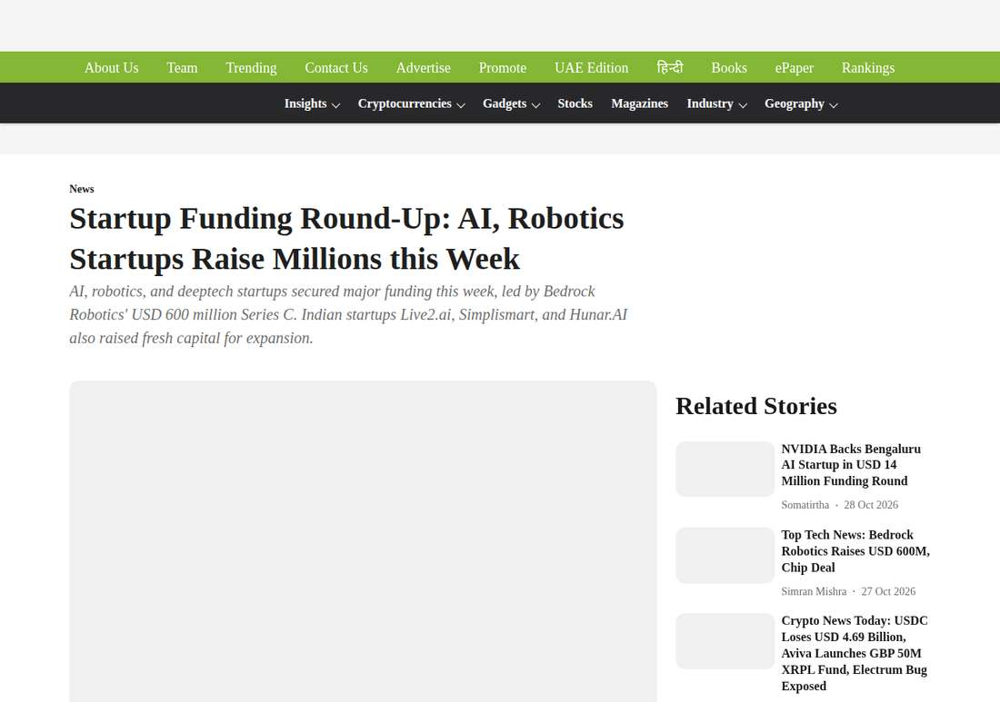

US$600 Million Bet on Excavators: Self-Driving Starts on the Construction Site
Bedrock Robotics closed a US$600 million Series C at a post-money valuation of US$4.1 billion, led by CapitalG and Emergence Capital, to accelerate commercial deployment of autonomous excavators and self-driving construction equipment.
- 01THE ROUND — October 30, 2026: the weekly funding roundup publishes Bedrock's Series C.
- 02THE LEADS — CapitalG and Emergence Capital lead, at a US$4.1 billion valuation.
- 03THE DEPLOYMENT — Funds go toward commercial deployment of autonomous excavators and construction equipment.
WHAT HAPPENEDWhat Happened
Bedrock Robotics ranked near the top of the weekly funding roundup published on October 30, 2026. The company closed a US$600 million Series C at a post-money valuation of US$4.1 billion, led by CapitalG and Emergence Capital.
Bedrock builds autonomous driving systems for construction and engineering machinery, targeting the repetitive and dangerous machine work on job sites. The use of funds is explicit: accelerating commercial deployment of autonomous excavators and self-driving construction equipment.
The size of this round deserves separate attention. The US$600 million Series C accounts for roughly 60% of the company's cumulative funding of about US$1 billion, meaning a single round raised more than half of all previous funding combined. Capital is concentrating on physical-world applications that can actually be deployed.
CONSTRUCTION FIRSTSelf-Driving Starts Work on the Construction Site First
Passenger-car autonomy is stuck on regulation and long-tail scenarios; construction sites are an earlier landing ground. The sites are enclosed, routes repeat, labour shortages are real, and safety staff can provide backup on site. Bedrock's chosen track avoids the hardest problem of open roads.
The economics of automating excavators and construction machinery are also more direct. Site downtime is expensive, skilled operators are hard to hire, and every extra hour a machine runs is real money. What customers buy is not a technology concept, but uptime.
WHAT 4.1B BUYSA US$4.1 Billion Valuation Buys Deployment Speed
A US$4.1 billion post-money valuation is not low for a company that has not yet reached mass production. Investors are betting on deployment speed: the money must convert into more sites, coverage of more machine types and a faster commercialisation cadence.
The risk is equally clear. Validation cycles for construction machinery are long, customers are construction firms and equipment makers, and procurement decisions move slowly. The valuation's premise is that this money buys replicable deployment cases, not more demo videos.
THE WEEK'S SIGNALThe Week's Funding List Shows Where the Money Is Going
Manufacturing and physical AI topped the same week's funding list: Re:Build at US$2.1 billion, Kalshi at US$1 billion, Bedrock at US$600 million, with the top ten deals totalling roughly US$4.8 billion. Money has not left AI; it has moved from pure software toward the tangible world.
For founders, the signal is direct. Physical AI that fills a specific labour gap and can start running in enclosed settings first finds it easier to land large cheques than a general-purpose humanoid narrative.
THE SHIFTWhat Changed
SIGNAL JUDGMENT — ANALYSISPhysical AI Money Flows to Where Work Gets Done First
Tokenta Signal's judgment: construction sites will see self-driving before open roads do. The significance of Bedrock's round is not the valuation figure, but that it proves the commercialisation path for enclosed settings.
WHAT REMAINS UNCERTAINWhat Remains Uncertain
EVIDENCEEvidence

The original report confirms Bedrock Robotics closed a US$600 million Series C at a post-money valuation of US$4.1 billion, led by CapitalG and Emergence Capital, to accelerate commercial deployment of autonomous excavators and self-driving construction equipment.
PRIMARY SOURCESPrimary Sources
- Analytics Insight: Startup Funding Round-Up: AI, Robotics Startups Raise Millions this Week
https://www.analyticsinsight.net/news/startup-funding-round-up-ai-robotics-startups-raise-millions-this-week - Tech Insider: Funding Rounds This Week (Oct 31): Re:Build, Kalshi
https://tech-insider.org/biggest-funding-rounds-rebuild-kalshi-bedrock-physical-ai-2026/
RELATEDRelated Intelligence
- Agility Robotics Closes SPAC Deal, Set to Trade on Nasdaq as AGLT on November 5
- Uber Books $59.8 Billion in Q3 and Puts a Number on Autonomy: 700 Driverless Vehicles by Year-End
- South Korea opens its first humanoid robot data factory: 12 robots do the work first, and bank the data
- Tesla Robotaxi Rolls Into Fort Worth, Its Seventh City